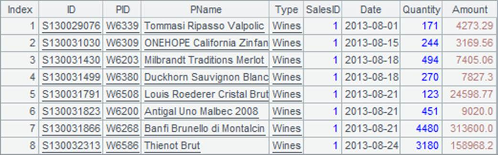
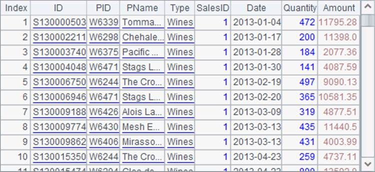

We can retrieve data from data tables through multithreaded processing, if the order of records is irrelevant to the result. This type of processing can make full use of the system resources, thereby enhancing the efficiency. Use @m option with f.import() function to use the multithreaded parallel processing.
You can use the multithreaded parallel processing to retrieve data from a single data file:
|
|
A |
B |
|
1 |
=file("PersonnelInfo.txt") |
=now() |
|
2 |
=A1.import@t() |
=now() |
|
3 |
=A1.import@mt() |
=now() |
|
4 |
=string(interval@ms(B1,B2))+"/"+string(interval@ms(B2,B3)) |
|
A2 imports data directly; while A3 uses f.import@m() to import data with multithreads. A4 compares the time the two methods use and gets the following result:

Retrieving data in parallel can significantly improve performance.
While data is retrieved from a single data file using multithreads, the multithreaded system will divide the file into multiple segments and every segment will be retrieved through a file cursor. Each file cursor uses a separate thread for the data retrieval, which resembles the above example where files are retrieved using multithreaded processing. For more information about retrieving data by segment in esProc, read Bin Files.
Because data is retrieved from a single data file by parallel processing, the order of records in the returned result is irregular too
With f.import@m(), the number of threads it uses is determined by the specified number of parallel tasks. The property is configured on the General page by clicking Tool>Option on esProc¡¯s menu bar:
